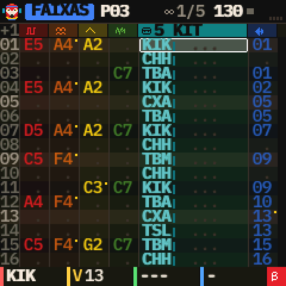
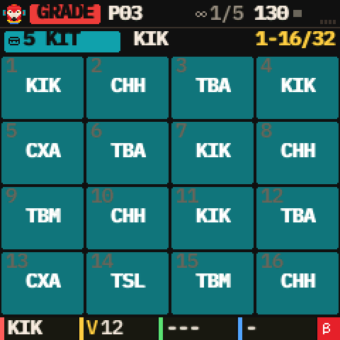
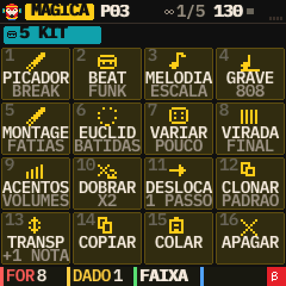
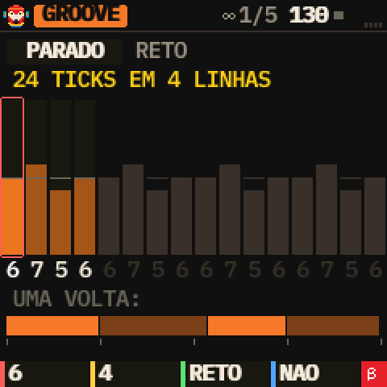
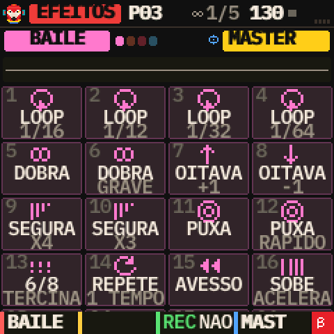
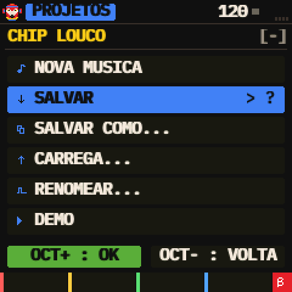

BAILE
BAILE
1. Começar

Segure HOME em qualquer página para ver a ajuda dela. Uma barra amarela enche embaixo da tela quando segurar um botão vai abrir alguma coisa (AJUDA, LIVE, FERRAMENTAS).
2. Os botões
| Botão | O que faz |
|---|---|
| HOME | As faixas. Segurado: a ajuda da página. HOME + PLAY: pânico, tudo para. |
| SEQ | A grade de passos. OCT− / OCT+: 16, 32 ou 64 passos. |
| EDIT | O som da faixa: SOM, SOM 2, (operadores FM / edição do sample), EFEITO, TABELA. De novo: a próxima página. |
| LFO | O LFO, depois a MODULAÇÃO. |
| ENV | O ENVELOPE, depois o MIX (níveis, pan, envios, master). |
| FX | ENVIOS (drive, eco, reverb por faixa), LIVE, FILTRO, SEQ FX. Segurado: o LIVE enquanto você segura. |
| SCL | A ESCALA, depois a MÁGICA, depois volta. |
| GLO | A MÚSICA (a sequência), o GROOVE, as OPÇÕES (tema, idioma, relógio MIDI, fonte, metrônomo). |
| SAVE | PROJETOS (pisca enquanto há mudanças). Segurado: as ferramentas. OCT− / OCT+ segurando: desfazer / refazer. |
| PLAY, REC | Toca e para; grava (as teclas escrevem no cursor, ou no tempo enquanto toca). |
| ARP | Não é arpejador: é a tecla de apagar e de shift. Um toque apaga a célula. Segurado: + SELECT insere ou tira uma linha, + KNOB 3 / 4 o segundo efeito da célula, + PRESETS o motor da faixa. |
| Encoder | O que faz |
|---|---|
| SELECT | A linha; nas páginas de EDIT, LFO, ENV, FX e GLO, a página. |
| ALGORITHM | A faixa. Em MÚSICA a entrada, em GROOVE o passo. |
| PRESETS | O som de fábrica (na primeira página de SOM), ou o padrão nas outras. |
| KNOB 1–4 | A linha de baixo da tela diz o que cada um faz: 1 vermelho, 2 amarelo, 3 verde, 4 azul. |
3. Faixas, células e padrões

Cada célula tem uma nota, um volume e até dois efeitos: ARP (acorde), GLI (glide), VIB, ROL (rufo), BND, CHN (chance), ATR (atraso), CRT (corte), INV (avesso), ALT (tom), PUL (pula para uma linha), FIM (acaba o padrão)… Os KNOB 3 e 4 escolhem o efeito e o valor; com ARP segurado, o segundo efeito.

4. Os sons
Cada faixa tem um motor: PULSO, ONDA, RUÍDO, FM (6 operadores, uma faixa só), KIT ou SAMPLE. Na primeira página de EDIT, o PRESETS escolhe o som de fábrica; ARP segurado + PRESETS troca o motor.

| Sons do BAILE | Para quê |
|---|---|
| GRAVE 808 | O grave do funk, com soco e glide. |
| GRAVE TORTO | Um 808 serrilhado e esmagado: mandelão. |
| SUB | Só o sub, redondo. |
| LEAD MELODY | O lead do funk melody, com vibrato e glide. |
| PIANO MELODY | Piano FM brilhante, para os acordes (o efeito ARP faz o acorde numa nota só). |
| STAB | Um golpe de metais curto. |
| SIRENE | Uma sirene no motor PULSO: segure a nota. |
Os breaks
Uma faixa SAMPLE toca um break cortado em 16 fatias, uma por tecla: TAMBORZAO, VOLT, FUNK 150, MANDELAO, BREGA FUNK e MONTAGEM (cada semicolcheia um som diferente, para picotar). Todos são sintetizados, nenhum é tirado de disco. Os seus sons entram em MEU 1 a 4 pelo importador.
5. Os 8 kits

| Kit | As peças que fazem ele |
|---|---|
| VOLT | O 808 do Miami bass: bumbo, BOOM longo, caixa e palma, cowbell, clave, conga, maracas, stab de orquestra. |
| TAMBOR | O tamborzão: bumbo seco, TUM, caixa seca, palmas, atabaques grave, médio, agudo, slap e abafado, tiro de caixa. |
| 150 | Curto e duro: bumbo seco, PUNCH distorcido, caixa estalada, metal, zap, rufo de caixa. |
| MANDELA | Estourado: bumbo saturado, sub, bigornas, a BRUXARIA (um ruído que cresce), varredura, chiado, glitch, laser. |
| BREGA | Bumbo seco e redondo, palmas dobradas, timbal grave e agudo, cowbell, pandeirola. |
| MELODY | A bateria eletrônica limpa dos anos 2000: ride, crash, clave, sino. |
| TUIN | Os efeitos do baile: duas sirenes, apito, o TUIN que despenca, laser, tiro, explosão, vinil, scratch, o ruído que SOBE. |
| PERCUS | Percussão brasileira: atabaques, slap, surdo, chocalho, pandeiro, tamborim, caixa, agogô, cuíca, reco-reco, triângulo, apito, ganzá. |
6. A MÁGICA

| Ferramenta | O que faz |
|---|---|
| BEAT FUNK | Numa faixa de kit, escreve o funk daquele kit (o tamborzão no TAMBOR, a bigorna fora do tempo no MANDELA, as palmas dobradas no BREGA…). A força acrescenta percussão, chimbal, ghosts e o rufo no fim. |
| GRAVE 808 | A linha de baixo no 3-3-2 do funk, quase sempre na tônica, com saltos de oitava e glides. |
| PICADOR | Pica o break: bumbo nos tempos, caixa no 2 e no 4, o resto embaralhado. |
| MONTAGE | A montagem: 2 a 4 pedaços do break (ou do kit) que se repetem em grupos, alguns ao avesso ou em outro tom. |
| VIRADA | Rufos no fim dos tempos e, num kit, uma virada de caixa que acelera no fim do compasso. |
| MELODIA, EUCLID, VARIAR, ACENTOS | Uma melodia na escala, um ritmo euclidiano, variações, acentos. |
| DOBRAR, DESLOCA, CLONAR, TRANSP | Dobra o padrão, desloca um passo, clona o padrão na música, transpõe. |
| COPIAR, COLAR, APAGAR | A faixa ou o padrão inteiro. |
7. O groove

| Modelo | Ticks | O balanço |
|---|---|---|
| RETO | 6 6 | sem balanço |
| TAMBOR | 6 7 5 6 | o atraso da segunda semicolcheia do tamborzão |
| BREGA | 7 5 | o swing do brega funk |
| 150 | 6 5 7 6 | empurra a segunda |
| MANDELA | 7 5 6 6 | arrastado |
| TERCINA | 4 4 4 | tercinas |
8. Efeitos ao vivo

- SEGURA repete um pedacinho (x3, x4) · PUXA o scratch · SOBE o crescendo que acelera · AVESSO · LOOP 1/16 a 1/64.
- CORTA corta o som no ritmo · FILTRO fecha os graves ou os agudos · FITA PARA · MERGULHO · CONGELA.
- GRAVE+ dobra os graves · ECO MC o eco de colcheia pontuada · SIRENE uma sirene por cima de tudo · SEM MELODIA, SEM BEAT.
9. A música e os projetos
GLO abre a MÚSICA: uma lista de padrões, cada um tocado N vezes. Tecla branca escolhe o padrão, o KNOB 3 as vezes, OCT+ acrescenta, OCT− tira. ARP alterna LOOP (repete o padrão na tela) e MÚSICA (toca a lista).

10. Um primeiro tamborzão
- Num projeto novo (SAVE, NOVA MÚSICA), a faixa 5 já é o KIT TAMBORZAO e a faixa 3 o GRAVE 808.
- Vá para a faixa 5 (ALGORITHM), abra a MÁGICA (SCL duas vezes) e toque BEAT FUNK (tecla 2). Gire o KNOB 1 para mais força e toque de novo.
- Faixa 3: toque GRAVE 808 (tecla 4). O baixo vem no tempo do bumbo.
- Abra o GROOVE (GLO duas vezes), escolha TAMBOR no KNOB 3 e ligue no KNOB 4.
- PLAY. Segure FX e toque SEGURA, PUXA, SIRENE.
- Na faixa 5, toque VIRADA para fechar o compasso. Gostou? SAVE, SALVAR, OCT+.

11. Ajuda e segurança
- Instalar: pelo hub (Chrome, Edge, Opera), com um cabo USB de dados e os outros programas MIDI fechados. Não desconecte durante a gravação; se cair, conecte de novo e clique outra vez: continua de onde parou.
- Resgate: se o BAILE não ligar duas vezes seguidas, o FM-1 abre o resgate USB sozinho (ou segure OCT− ao ligar). Então rode o instalador de novo.
- Silêncio? O BAILE começa com uma música vazia: escreva notas (REC e as teclas) ou carregue a DEMO.
- O PRESETS não troca o som? Você editou o som (*): o próximo aparece em dourado, OCT+ carrega.
- Errei: segure SAVE e aperte OCT− (desfazer).
- O clique na gravação: o metrônomo vai também no áudio USB; desligue nas OPÇÕES.
- Voltar ao oficial: M-UPGRADE da M-VAVE, firmware V15. Os projetos do BAILE se perdem. Os passos.